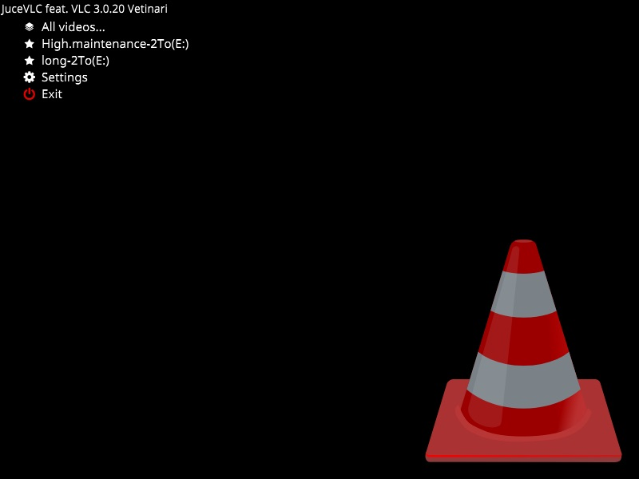
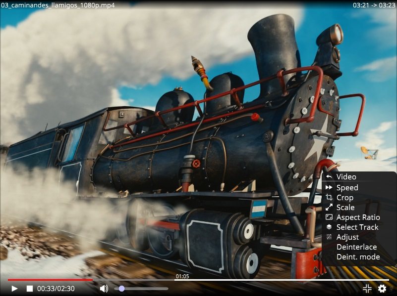

A fullscreen User Interface for VLC
Summary
JuceVLC is VLC with a simple MediaCenter-like fullscreen User Interface.
Goal
Browse and watch movies from your couch with a wireless mouse.
Features
- Browse local or remote (via UPNP) files and adjust settings using On Screen Display (O.S.D.)
- Frontpage movies menu with automatically downloaded posters (from omdbapi.com) or generated thumbnails (no setup required)
- Big, customizable fonts size and no tiny popup dialogs
- Subtitles selection and synchronization using slider via O.S.D.
- Search,Download,Extract and Load subtitles from opensubtitles.org
- Keep last and favorite video folders, as well as the last thirty videos positions
- Does not mess up your system: settings are stored in the application folder, not the registry (even through the installer)
- Portable: Paste is on any usb key or external hard drive
- You can use the installer multiple times:
- once for your computer, activating shortcut creation,
- and again for your usb key or external hard drive.
- JuceVLC application uses regular VLC core libraries/plugins: You can paste future VLC versions directory along JuceVLC to update the core video player without any JuceVLC update
- The "space-key" allows your relatives to play/pause your video if they want to interrupt your watching session;-)
Contact
News-
0.84 (2013/12/13):
- Fix startup crash when network connection is unavailable
- Better frontpage drive/folder icons
- libVLC 2.1.2
-
0.83 (2013/09/29):
- Audio channel selection
- libVLC 2.1.0
-
0.82 (2013/09/27):
- Fixes frontpage lockups when changing folder
-
0.81 (2013/09/25):
- Fixes endless/useless files scanning
-
0.80 (2013/09/24):
- New frontpage movie browser with posters or thumbnails (thanks to Mark Pietras for the motivation/inspiration)
- libVLC 2.0.8
-
0.71 (2013/07/24):
- Search,Download,Extract and Load subtitles from opensubtitles.org
-
0.70 (2013/07/20):
- Revamped menu : top item are always visible when listing many files
-
0.69 (2013/06/24):
- UPNP remote media support and browsing
-
0.68 (2013/06/12):
- libVLC 2.0.7
-
0.67 (2013/05/10):
- Save current crop ratio as it is not video but screen dependant
- Auto purge missing favorite folders on available drives
- Fixed secondary slider (audio offset...) reset after using arrows
- Fixed video position no recovered from current playlist selection
- Hide menu instead of shriking it on file open
-
0.66 (2013/04/11):
- libVLC 2.0.6
-
0.65 (2013/04/06):
- File listing sorting improvement
- Auxiliary slider reset button
- Fullscreen button
- Auxiliary slider function selection icons improvement
-
0.6 (2013/03/24):
- Audio equaliser (presets)
- Advanced subtitle configuration (colors, opacity,...) WARNING they are applied to the next played video
- File browsing improvement (sorting and icons)
- non disappearing controls fix
-
0.5 (2013/03/21):
- Installer (copying the new exe over previous installs still works) The application is still as portable as previously, the installer behaves just like extracting an archive, plus optionnal shortcuts creation.
- Localization support (English/French for now) -> look at "France.lang" to add other languages
- Automatic subtitles position mode (always above controls)
-
0.4 (2013/03/17):
- Save last 30 videos progress
- Subtitles position slider (avoids subtitles being hidden by controls)
- Smarter OSD Controls disappearing
- Fixed moved window flickering
- Added new configuration option (subtitles size, video deinterlace, video acceleration, video quality). They affect the next played video (added Apply option for this)
-
0.3 (2013/03/16):
- Fixed windowed mode being activated on video stop
- Fixed window dragging with a new title bar
- Added font size selection
- Added new icons
-
0.2 (2013/03/15):
- Fixed disappearing controls on pause or slider movement
- Added video adjustments (contrast, ...)
- Moved windowed/fullscreen options to player sub-menu
-
0.1 (2013/03/04):
- First release
Frontpage movies posters/thumbnails
Filesystem browser

On Screen Display
Subtitles management and adjustment

Quick adjustement : audio volume, subtitles delay, audio delay, playback speed, disable
Video settings